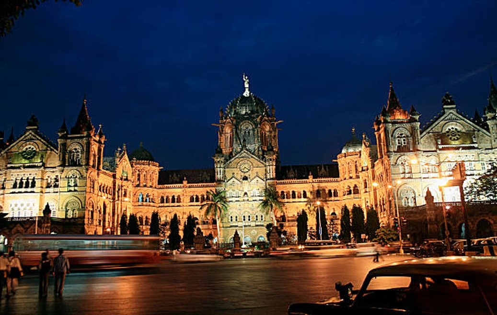
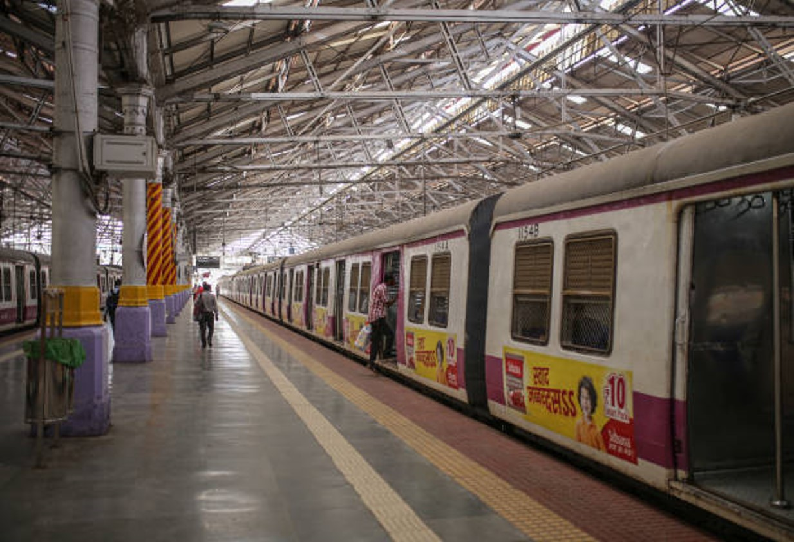

Chhatrapati Shivaji Terminus (officially Chhatrapati Shivaji Maharaj Terminus, formerly Victoria Terminus, Bombay station code: CSTM (mainline) /ST (suburban)), is a historic terminal train station and UNESCO World Heritage Site in Mumbai, Maharashtra, India. The terminus was designed by a British born architectural engineer Frederick William Stevens from an initial design by Axel Haig, in an exuberant Italian Gothic style. Its construction began in 1878, in a location south of the old Bori Bunder railway station, and was completed in 1887, the year marking 50 years of Queen Victoria's rule. In March 1996 the station name was changed from Victoria Terminus to "Chhatrapati Shivaji Terminus" (with station code CST) after Shivaji, the 17th-century warrior king who employed guerrilla tactics to contest the Mughal Empire and found a new state in the western Marathi-speaking regions of the Deccan Plateau. Shivaji's name is often preceded by "Chhatrapati", a title with literal meaning, "a king dignified by the emblem of a parasol; a great king." In 2017, the station was again renamed "Chhatrapati Shivaji Maharaj Terminus" (with code CSMT)
Timing : There is no time restriction for the station (open 24*7).

